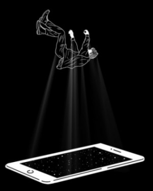

Impact on Victims
The psychological impact of NCII is profound, well-documented, and often severely underestimated by those who have not experienced it.
Post-Traumatic Stress Disorder (PTSD)
Victims frequently describe intrusive thoughts, hypervigilance, emotional numbing, and dissociation — all consistent with PTSD. The loss of control over one’s own body and image is experienced as a distinct, acute trauma. Unlike a physical assault, NCII does not end.
Depression and Severe Anxiety
High rates of clinical depression, generalised anxiety disorder, and panic attacks are documented among NCII victims — often persisting for years. The unpredictability of when and where the material might resurface means recovery is constantly interrupted.
Suicidal Ideation and Self-Harm
Multiple independent studies find that a significant proportion of NCII victims experience suicidal thoughts. A number of documented cases have ended in suicide, particularly among younger victims. This is not an edge case — it is a recognised and recurring outcome.
Reputational and Professional Harm
Victims report job losses following employer discovery of material, expulsion from educational institutions, and ostracism from communities. Women face significantly harsher social judgement than male victims, with blame frequently directed at them for having created the images.
Economic Consequences
Beyond lost income, victims face financial costs from legal action, content removal services, specialist technical assistance, and psychological care — costs that many cannot absorb, particularly without adequate civil legal remedies.
The Permanent Nature of Digital Distribution
Unlike a physical violation, NCII can surface and resurface indefinitely — discovered by new people, on new platforms, years after the original distribution. Victims describe living with perpetual, unresolvable vulnerability. There is rarely a clean ending.
